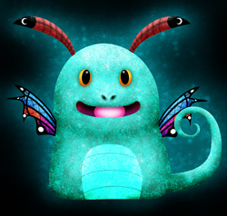
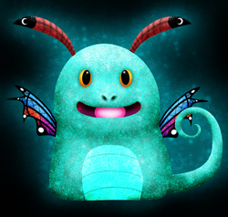

 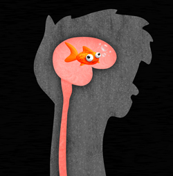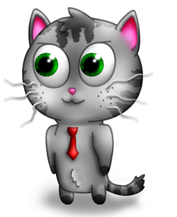
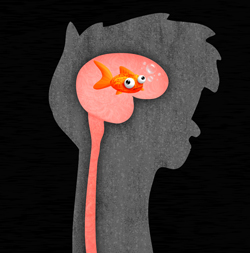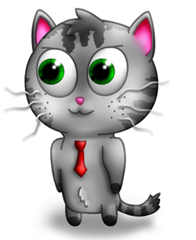 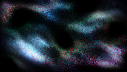
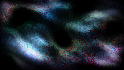 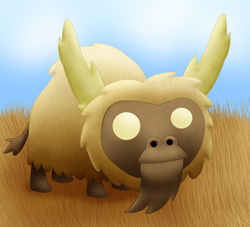An animal from a popular game called Don't Starve and they're so freakin' cute!"/>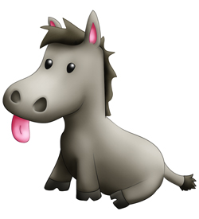
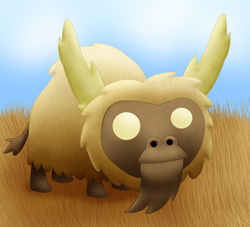An animal from a popular game called Don't Starve and they're so freakin' cute!"/>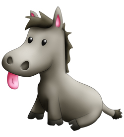 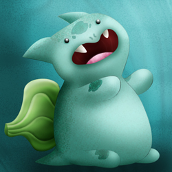
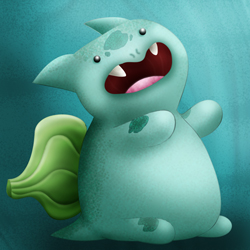


 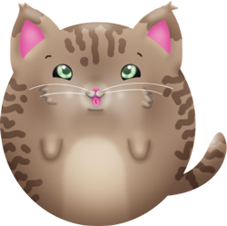
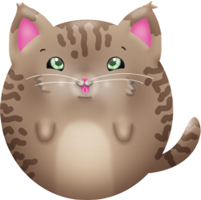
 |
Need design help?Art design is an everchanging mastery. Ensure you’re on track by checking out some latest and greatest tips! |
 |
Need direction?Everyone gets a nasty case of art block once in awhile - check out this page for some great tips on breaking the block! |